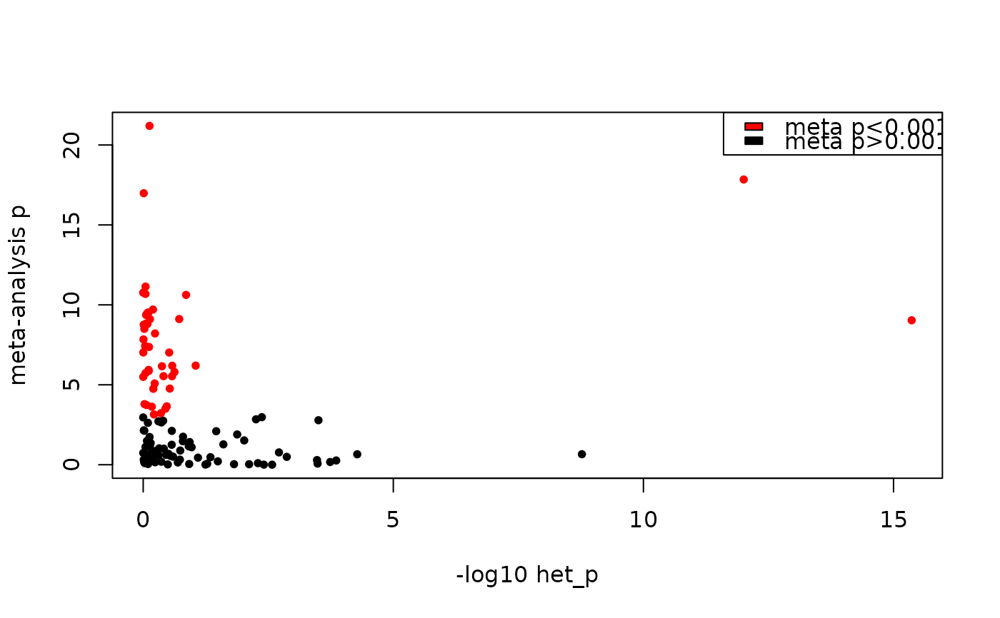
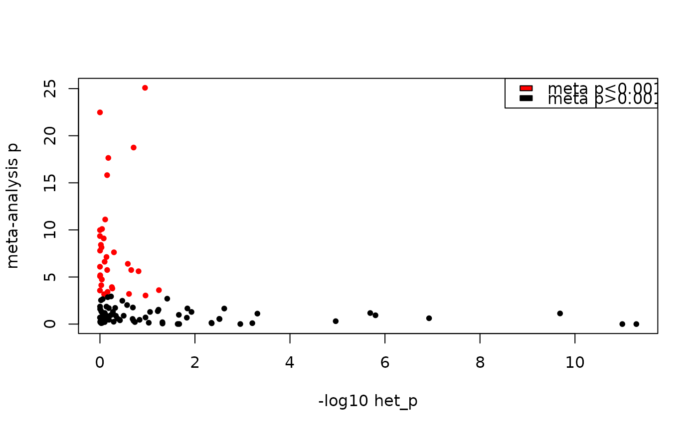

Make a forest plot to present multiple measurements and consensus effect
size from meta-analysis or meta-regression. Note that using metab_meta_regression()
results as input generates a single forest plot while using metab_meta_analysis()
generates one forest plot per sex and training time point.
Arguments
- results
named list returned by
metab_meta_analysis()ormetab_meta_regression()- metabolite_refmet
character, RefMet name of metabolite
Examples
# Get meta-analysis results in gastrocnemius
res = metab_meta_analysis("SKM-GN")
#> Computed 1000 meta-analysis results.
# Pick a feature
res$merged_res[res$merged_res$min_nominal_p > 0.01 &
res$merged_res$p_value < 0.001 &
res$merged_res$I2 < 30,]
#> sex comparison_group
#> 108 female 1w
#> 2099 female 2w
#> 2862 female 4w
#> 3432 female 8w
#> 4429 male 1w
#> 4432 male 1w
#> 4446 male 1w
#> 5249 male 1w
#> 5478 male 2w
#> 5532 male 2w
#> 6299 male 2w
#> 8112 male 8w
#> metabolite_refmet assay tissue
#> 108 CAR(5:1) metab SKM-GN
#> 2099 sn-Glycero-3-phosphocholine metab SKM-GN
#> 2862 Pantothenic acid metab SKM-GN
#> 3432 Hydroxyproline metab SKM-GN
#> 4429 GTInternalStandard_PG(33:1(d7))>PG(15:0/18:1(9z,d7))_[iSTD] metab SKM-GN
#> 4432 GTInternalStandard_SM(d36:2(d9))>SM(d18:1/18:1(9z,d9))_[iSTD] metab SKM-GN
#> 4446 Glycocholic acid metab SKM-GN
#> 5249 sn-Glycero-3-phosphocholine metab SKM-GN
#> 5478 GTInternalStandard_PE(33:1(d7))>PE(15:0/18:1(9z,d7))_[iSTD] metab SKM-GN
#> 5532 Hydroxyproline metab SKM-GN
#> 6299 sn-Glycero-3-phosphocholine metab SKM-GN
#> 8112 Pantothenic acid metab SKM-GN
#> feature_ID
#> 108 CAR(5:1)
#> 2099 sn-Glycero-3-phosphocholine
#> 2862 Pantothenic acid
#> 3432 Hydroxyproline
#> 4429 GTInternalStandard_PG(33:1(d7))>PG(15:0/18:1(9z,d7))_[iSTD]
#> 4432 GTInternalStandard_SM(d36:2(d9))>SM(d18:1/18:1(9z,d9))_[iSTD]
#> 4446 Glycocholic acid
#> 5249 sn-Glycero-3-phosphocholine
#> 5478 GTInternalStandard_PE(33:1(d7))>PE(15:0/18:1(9z,d7))_[iSTD]
#> 5532 Hydroxyproline
#> 6299 sn-Glycero-3-phosphocholine
#> 8112 Pantothenic acid
#> dataset
#> 108 meta-analysis
#> 2099 meta-analysis
#> 2862 meta-analysis
#> 3432 meta-analysis
#> 4429 meta-analysis
#> 4432 meta-analysis
#> 4446 meta-analysis
#> 5249 meta-analysis
#> 5478 meta-analysis
#> 5532 meta-analysis
#> 6299 meta-analysis
#> 8112 meta-analysis
#> site
#> 108 broad_met_metab-u-hilicpos,umichigan_metab-u-rppos
#> 2099 broad_met_metab-u-hilicpos,umichigan_metab-u-rppos,gtech_metab-u-lrppos
#> 2862 broad_met_metab-u-hilicpos,umichigan_metab-u-ionpneg,umichigan_metab-u-rppos
#> 3432 mayo_metab-t-amines,broad_met_metab-u-hilicpos
#> 4429 gtech_metab-u-lrpneg,gtech_metab-u-lrppos
#> 4432 gtech_metab-u-lrpneg,gtech_metab-u-lrppos
#> 4446 umichigan_metab-u-rpneg,umichigan_metab-u-rppos
#> 5249 broad_met_metab-u-hilicpos,umichigan_metab-u-rppos,gtech_metab-u-lrppos
#> 5478 gtech_metab-u-lrpneg,gtech_metab-u-lrppos
#> 5532 mayo_metab-t-amines,broad_met_metab-u-hilicpos
#> 6299 broad_met_metab-u-hilicpos,umichigan_metab-u-rppos,gtech_metab-u-lrppos
#> 8112 broad_met_metab-u-hilicpos,umichigan_metab-u-ionpneg,umichigan_metab-u-rppos
#> is_targeted p_value logFC logFC_se zscore
#> 108 FALSE 4.841644e-04 -0.5758692 0.16503541 -3.489368
#> 2099 FALSE 6.544064e-04 0.4686258 0.13750754 3.408001
#> 2862 FALSE 3.406216e-04 0.3060600 0.08543744 3.582270
#> 3432 TRUE 9.536402e-04 -0.3046291 0.09220404 -3.303858
#> 4429 FALSE 7.826054e-04 0.3640958 0.10839816 3.358875
#> 4432 FALSE 5.159665e-04 0.4174081 0.12020989 3.472327
#> 4446 FALSE 6.450540e-04 -1.1678238 0.34227691 -3.411927
#> 5249 FALSE 1.792113e-04 0.4447678 0.11871077 3.746651
#> 5478 FALSE 4.179376e-04 0.3531405 0.10008262 3.528490
#> 5532 TRUE 9.629043e-04 -0.3405629 0.10316502 -3.301147
#> 6299 FALSE 3.349122e-05 0.4924512 0.11871077 4.148328
#> 8112 FALSE 8.632438e-04 0.3061200 0.09188165 3.331677
#> comparison_average_intensity reference_average_intensity cv I2
#> 108 -4.1092037 -3.53090938 -0.10893402 0
#> 2099 1.8168518 1.30986661 0.03913089 0
#> 2862 2.8271107 2.51087905 0.18007120 0
#> 3432 -0.7270632 -0.41528566 0.38359076 0
#> 4429 0.6793974 0.30164023 0.55245674 0
#> 4432 1.2316318 0.80838007 -0.35725084 0
#> 4446 -2.2427630 -0.96682118 0.50344964 0
#> 5249 1.8369527 1.35632835 0.03913089 0
#> 5478 -1.2236410 -1.58092761 -0.25444384 0
#> 5532 -0.2696902 0.09878938 0.38359076 0
#> 6299 1.8599337 1.35632835 0.03913089 0
#> 8112 3.4759829 3.15871906 0.18007120 0
#> QEp min_nominal_p
#> 108 0.7004254 0.01278231
#> 2099 0.5622604 0.02531945
#> 2862 0.4013032 0.01064808
#> 3432 0.8463470 0.01541556
#> 4429 0.7875212 0.01330945
#> 4432 0.8283815 0.01716247
#> 4446 0.4944695 0.01984936
#> 5249 0.5973926 0.02049050
#> 5478 0.8959178 0.01109714
#> 5532 0.6280688 0.01631298
#> 6299 0.7921142 0.01300881
#> 8112 0.9411143 0.03725202
forest_plot(res, metabolite_refmet="Hydroxyproline")
# Look at meta-regression results for a feature in the plasma
res = metab_meta_regression("PLASMA")
#> Warning: PLASMA differential analysis results have ref standard results. Excluding them from meta-analysis.
#> Performing meta-regression for 121 redundant metabolites in PLASMA...
#> Done.
#> Number of models that were fit for PLASMA:

#> metareg_nplatform
#> metareg_calls 2 3 4 5
#> list(~analysis_group | platform, ~analysis_group | istargeted) 0 26 10 4
#> x_subset 2 1 0 1
#> FE 77 0 0 0
#> Total number of cases with high heterogeneity: 9
#> Total number of cases with low heterogeneity: 112
#>
#> Summary of the number of PLASMA metabolites in each category:
#> PLASMA
#> unique_metabs 961
#> high_het_metabs_targeted 8
#> high_het_metabs_untargeted_only 1
#> meta_anal_metabs 112
forest_plot(res, metabolite_refmet="CAR(18:2)")
res = metab_meta_regression("BAT")
#> Warning: BAT differential analysis results have ref standard results. Excluding them from meta-analysis.
#> Performing meta-regression for 111 redundant metabolites in BAT...
#> Done.
#> Number of models that were fit for BAT:

#> metareg_nplatform
#> metareg_calls 2 3 4 5
#> list(~analysis_group | platform, ~analysis_group | istargeted) 0 29 8 4
#> x_subset 0 4 1 0
#> FE 65 0 0 0
#> Total number of cases with high heterogeneity: 11
#> Total number of cases with low heterogeneity: 100
#>
#> Summary of the number of BAT metabolites in each category:
#> BAT
#> unique_metabs 1024
#> high_het_metabs_targeted 9
#> high_het_metabs_untargeted_only 2
#> meta_anal_metabs 100
forest_plot(res, metabolite_refmet="Aspartic acid")